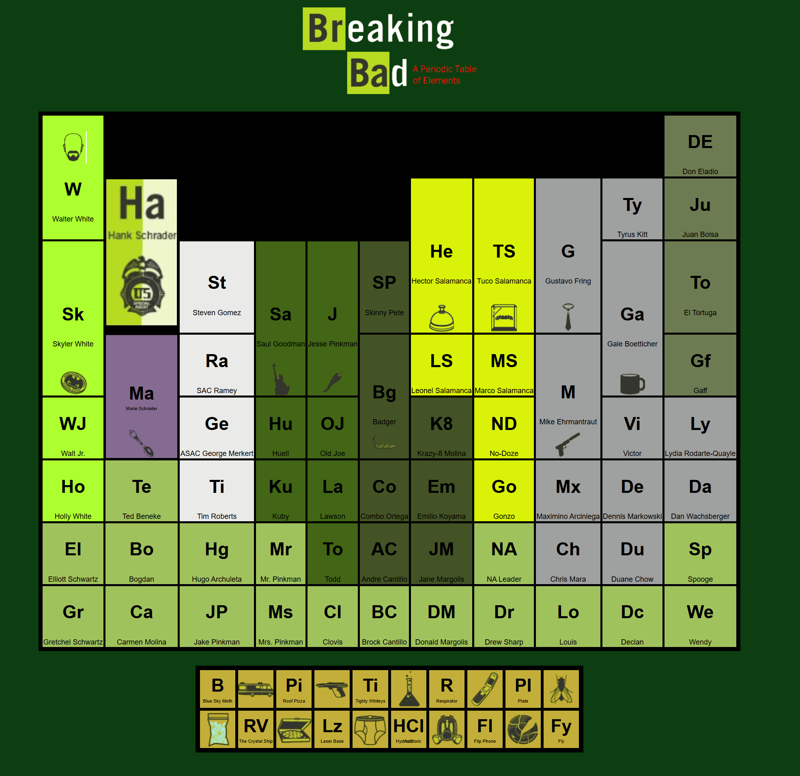

Desarrollador en prácticas · EPAM Neoris
Creación de una plataforma basada en Backstage para unificar herramientas de ciberseguridad y monitorización. Automatizaciones con IA, workflows, agentes, multiagentes, skills y prompting.
Creación de una plataforma basada en Backstage para unificar herramientas de ciberseguridad y monitorización. Automatizaciones con IA, workflows, agentes, multiagentes, skills y prompting.
Activación de servicios AMEX mediante prospección en frío y gestión de cartera de clientes.
Asesoramiento y gestión de préstamos personales a clientes.
Asesoramiento personalizado en seguros y productos financieros.
Prospección, captación y fidelización de clientes; venta de seguros, tarjetas y productos financieros.
Coordinación de equipos y ejecución de tareas administrativas.
Coordinación y ejecución de proyectos enfocados a jóvenes de la localidad.
UNIR
Southwestern Baptist Theological Seminary (Texas)
Seminario Europeo de Formación Teológica
Universidad de Salamanca
IES Miguel Olleros Gregorio

